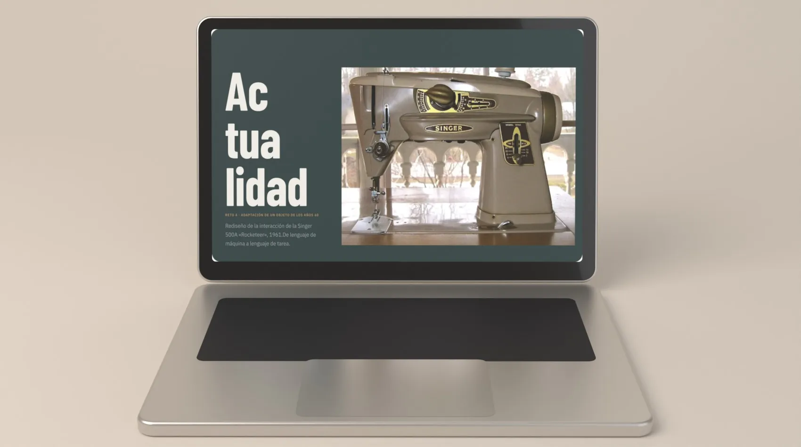
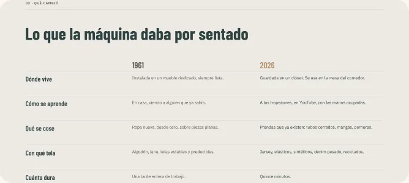
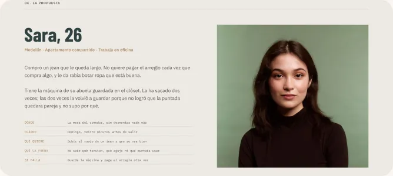
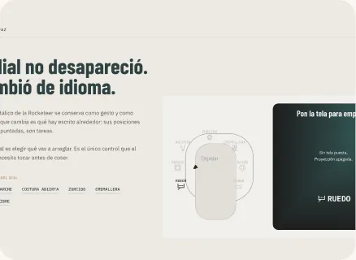
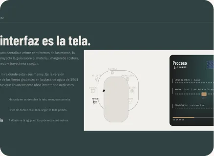
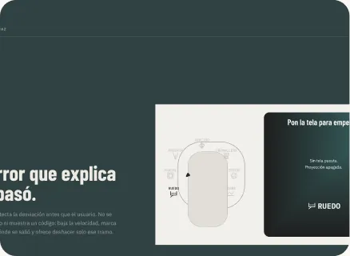

- Interaction
- UX research
- Product
Singer 500A
From machine language to task language: rethinking a 1961 sewing machine for people who repair clothes instead of making them.
- Role
- UX/UI and interaction design
- Context
- UI/UX class · Challenge 4: adapt an object from the 1960s
- Year
- 2026
- Tools
- Figma

The challenge
The Singer 500A “Rocketeer” (1961) still sews perfectly — the problem isn’t mechanical. It still speaks the language it was taught: tension, stitch length, presser foot.
Today almost nobody makes clothes from scratch; people repair, adjust and transform what they already own. New users give up before their first straight seam.
Research
I compared 1961 with 2026: where the machine lives, how people learn, what they sew, which fabrics and how much time they have.
I built a persona — Sara, 26, with her grandmother’s machine in the closet — and a scenario: hemming a pair of jeans on a Sunday, twenty minutes before going out.


Key decisions
- The metal dial stays, but it changes language: its positions are no longer stitches, they are tasks — hem, patch, zipper, darning.
- The interface is the fabric: the machine projects the seam guide onto the material, where the hands are, instead of on a screen.
- Errors that explain: when the seam drifts, the machine slows down, marks where it went off and offers to undo only that stretch.



Outcome
A user flow for hemming jeans from start to finish, the task dial, and the projected-guide and error screens, presented in a deck with prototyped interactions.